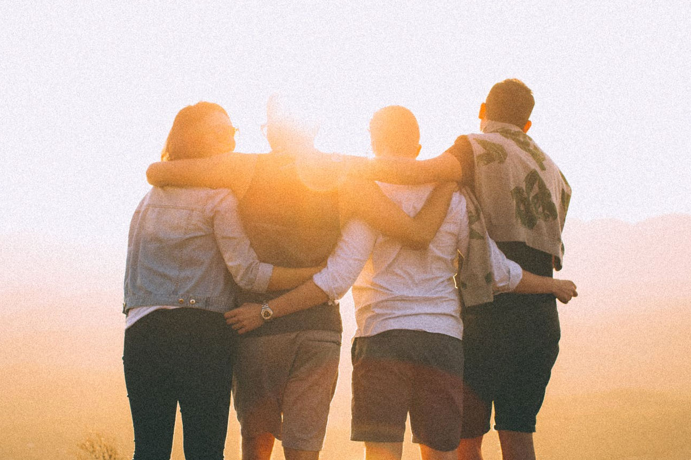
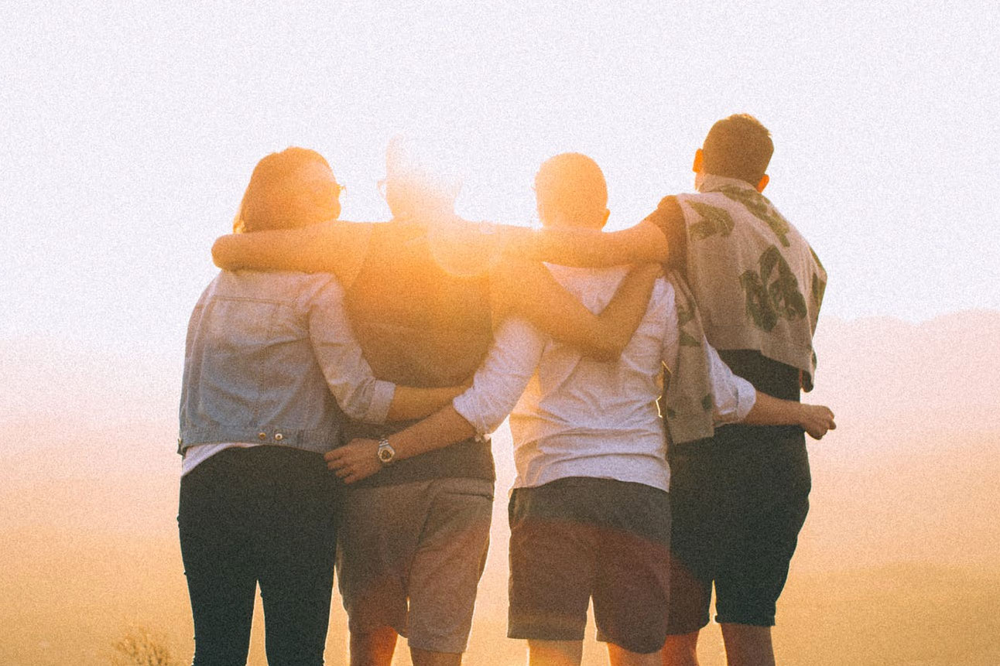

Miguel é um cara muito gente boa, muito bom de trocar ideia, simpático e que adora tocar violão
Raphael é a pessoa mais engraçada e com a energia mais contagiante que
conheci na Trybe.
Tem um timing quase perfeito pra comentar haha.
Carolina é super amigável e disponível para ajudar qualquer um.
Divertida e simpática, ainda por cima é uma das poucas pessoas que habita
esse Rio de Janeiro comigo aqui na trybe.
Conheci o Jonas através de uma situação bem inusitada e desde então pude
conversar
e ver que é uma pessoa muito bacana de criar uma relação durante essa
jornada.